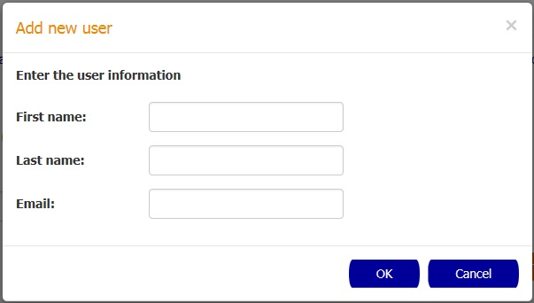

How to create a custodian
In order to create a new custodian you need to click the New button.

In the New Custodian popup enter the first name, last name and email for the new custodian and then confirm the action by pressing the OK button.
How to delete custodians
In order to delete custodians you need to select the checkboxes of the custodians that you want to delete and
click the Delete button.
After this, the Delete Custodians popup is going to appear with a warning message and the name of the custodians that were selected to be deleted. Click the OK button to confirm the action
How to display a custodian details
In order to display the custodian details you need to click the desired group in the table. After the click the Custodian Details page is going to be displayed.
How to import a custodians from a CSV file
In order to import a set of custodians from a CSV file you need to click the Import button and then select the CSV file that will be processed.
Click the OK button to confirm the action and a success message will appear if the import process finished successfully